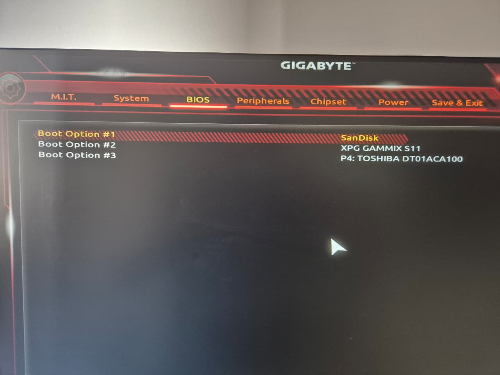
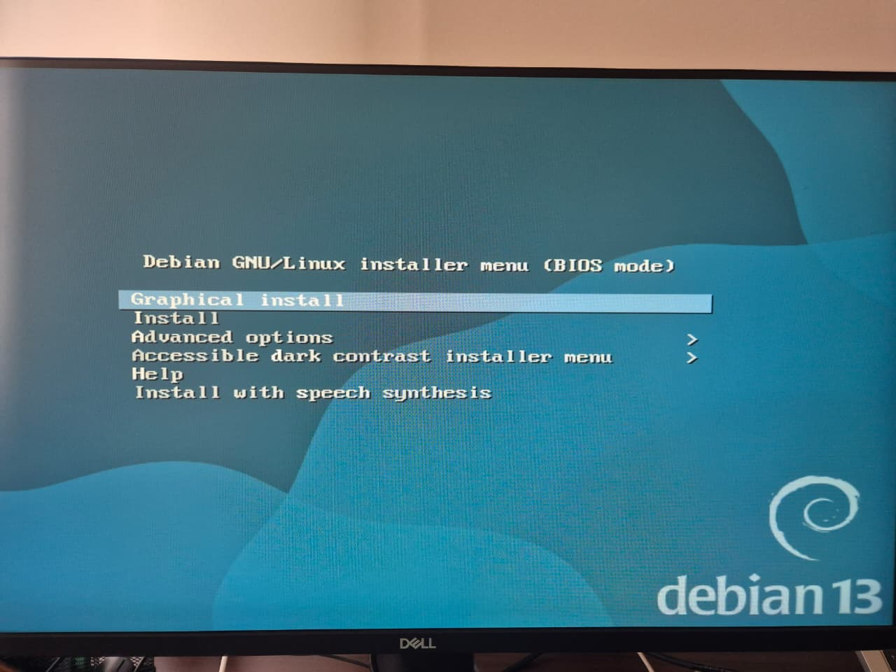
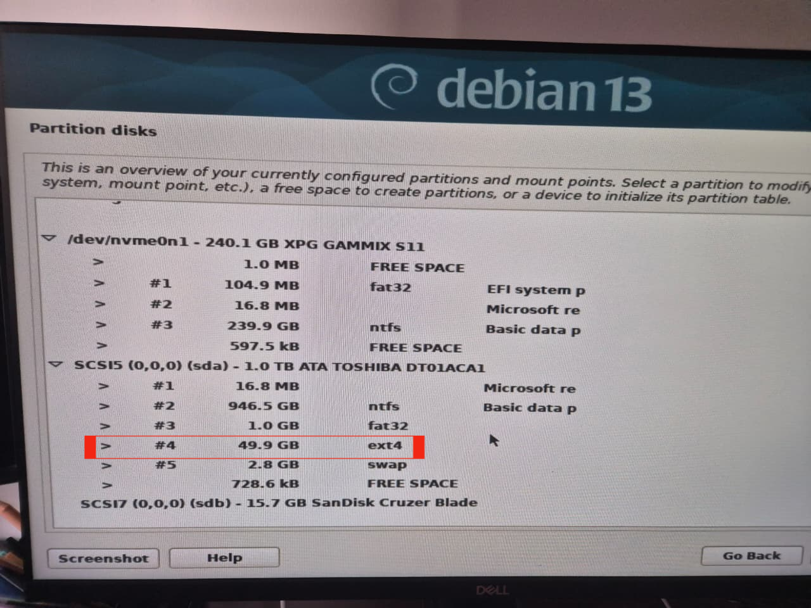
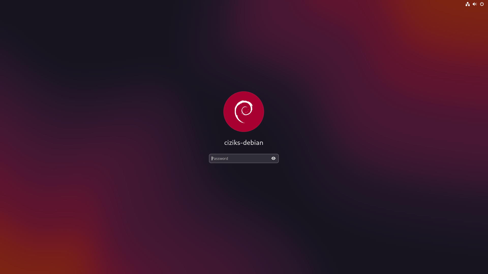
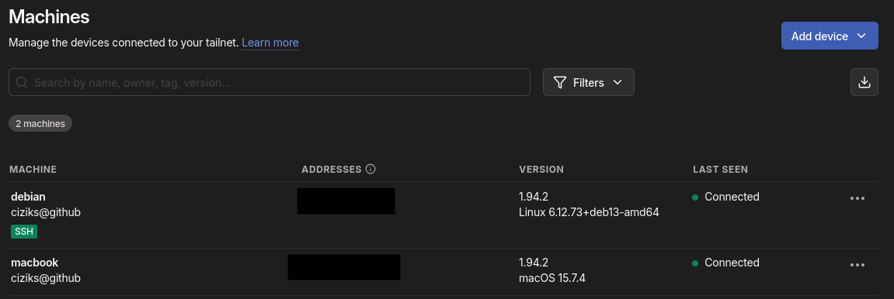
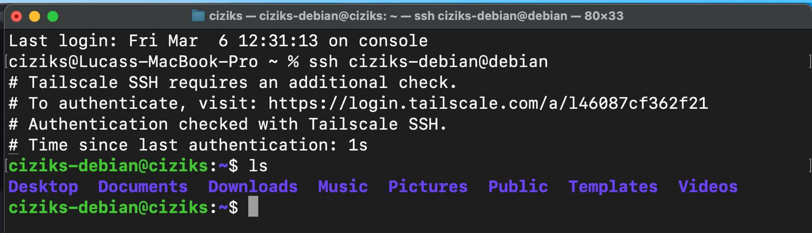

1) Introdução
Para essa disciplina, é fortemente recomendado o uso de uma máquina Linux para o desenvolvimento do kernel. Como disponho apenas de um laptop Mac e um desktop Windows, cogitei inicialmente virtualizar um Debian via UTM no Mac para levá-lo às aulas. Porém, dada a natureza da disciplina, que já envolve emular um kernel Linux dentro do Linux, essa abordagem adicionaria uma terceira camada de virtualização, comprometendo a performance e possivelmente gerando diversos problemas durante meu desenvolvimento.
Assim, seguindo a sugestão do monitor David, optei por instalar dual boot na minha máquina desktop e acessá-la remotamente via SSH pelo Mac durante as aulas presenciais. Desse modo, esse tutorial 0 mostra minha experiência para instalar e configurar o dual boot e também como estabelecer a conexão ssh via VPN.
2) Configurando o Dual Boot
Referência: Debian - DualBoot Windows
Preparação da Mídia de Instalação
Comecei baixando a imagem do
Debian Trixie 13, para arquitetura
amd64, utilizando o instalador online, pois tinha conexão com a internet e o arquivo era
consideravelmente menor. Em seguida, conectei um pen-drive de 15 GB e utilizei o
Balena Etcher, recomendado pela documentação oficial,
para torná-lo bootável com a imagem do Debian (alternativas como o Rufus também funcionariam normalmente).
Particionamento no Windows
Utilizei o Gerenciador de Disco do Windows para criar uma partição de 50 GB no HD destinada ao Debian, deixando o espaço não alocado disponível para o instalador reconhecer.
Boot pelo Pendrive e Instalação
Com o pen-drive pronto, reiniciei a máquina, entrei na BIOS (tecla F12) e configurei o pen-drive (SanDisk) como prioridade de boot.

Após salvar (F10) e reiniciar, o instalador do Debian iniciou corretamente.

Seguindo os passos padrões: seleção de idioma, país, teclado, configuração de rede, nome da máquina e criação de usuários; Cheguei ao passo de particionamento sem problemas.
Troubleshooting — Partição Não Reconhecida
No passo de particionamento, o instalador do Debian não reconhecia a partição que havia criado, lendo o HD inteiro como um único bloco. Para resolver o problema, tomei as seguintes medidas ([Solved] Debian installer doesn't detect free space in hard disk):
- Confirmei que o BitLocker do Windows estava desativado;
- Desativei o Secure Boot na BIOS;
- Desabilitei o Fast Startup do Windows;
- Reformatei o HD, alterando-o para
NTFSe a partição destinada ao Debian comoext4.
Após reiniciar e aplicar todas as mudanças, o instalador reconheceu a partição, e pude instalar o sistema corretamente.

Com a instalação concluída, reiniciei a máquina (lembrando de reordenar as prioridades de boot na BIOS) e o GNU GRUB apareceu oferecendo a seleção entre Windows e Debian.

O sistema inicializou normalmente e o login no Debian foi realizado com sucesso.

3) Configurando Conexão Remota (VPN + SSH)
Referência: Tailscale Documentation
Para acessar o desktop remotamente a partir do Mac durante as aulas presenciais, foi necessário estabelecer uma conexão privada utilizando o Tailscale, uma VPN mesh sugerida pelo monitor da disciplina e disponível gratuitamente.
Instalação no Mac
A instalação no macOS é feita via pacote .pkg, disponível em
Tailscale - Download Mac. Segui o fluxo
padrão de instalação sem nenhuma configuração adicional.
Instalação no Debian
Como o Debian havia sido instalado do zero, o curl ainda não estava disponível. Primeiro
atualizei os pacotes e instalei as dependências necessárias:
sudo apt update
sudo apt upgrade
sudo apt install curl
Com o curl disponível, instalei o Tailscale seguindo a
documentação oficial para Linux:
curl -fsSL https://tailscale.com/install.sh | shConfiguração Tailscale
Após a instalação, iniciei o cliente Tailscale e habilitei o suporte a SSH pela VPN:
# Iniciar o cliente e autenticar na rede Tailscale
sudo tailscale up
# Habilitar SSH via Tailscale
tailscale set --ssh
O comando tailscale set --ssh configura a máquina para aceitar conexões SSH autenticadas
diretamente pela VPN, sem necessidade de gerenciar chaves manualmente.
Verificação SSH
Após autenticar ambas as máquinas, acessei o portal do Tailscale e confirmei que tanto o Mac quanto o desktop Debian apareceram como dispositivos ativos na rede privada.

Com ambas as máquinas na mesma rede Tailscale, a conexão SSH do Mac para o Debian foi estabelecida com sucesso, permitindo o desenvolvimento remoto durante as aulas presenciais.

Agora estamos prontos para iniciar o Tutorial 1!